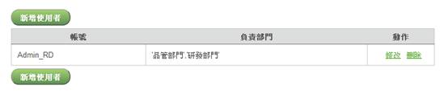
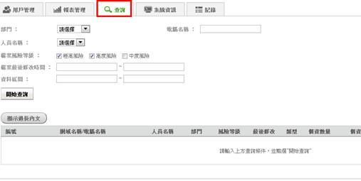
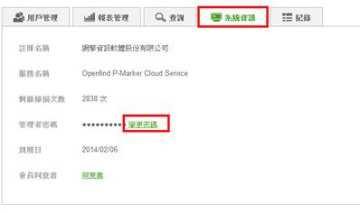

本章節將說明部門管理者的權限：
- 建立報表：可以建立報表，但報表內容只包含其所管轄部門。以下圖設定為例，Admin_RD 這個管理者產生的報表，將只包含「品管」、「研發」兩部門的盤點結果。
註：系統管理者可以看到所有部門管理者建立的報表）

- 查詢個資檔案：可使用查詢個資檔案（請見下方圖示），但內容只包含其所管轄部門。

- 可修改部門管理者本身的密碼：請點選系統資訊頁面中的變更密碼，即可進行密碼修改。

- 無法建立其他部門管理者。
- 無法進行風險等級設定。